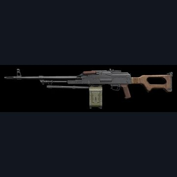
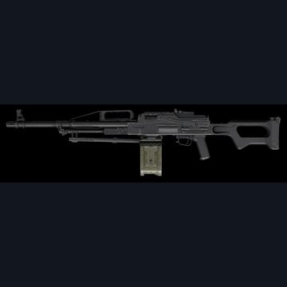
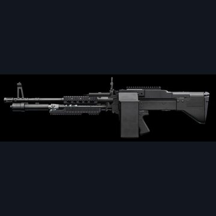
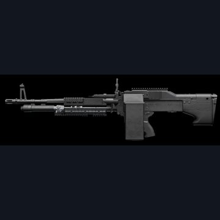

Repères de la famille
Huit mitrailleuses légères : la famille la plus homogène du catalogue. Sept de ces armes acceptent le mode automatique, une accepte le semi-automatique et la dernière les deux, leurs cadences publiées vont de 550 à 700 coups par minute, et leur recul vertical reste dans une fourchette étroite, de 106 à 138. Ce sont des armes de feu soutenu, construites pour tenir une position, pas pour en changer.
Le prix à payer est le poids : de 1,5 kilo pour le RPK-16 à 5,76 kilos pour le M60E6. Et la munition : quatre calibres seulement, dominés par le 7,62 x 51 mm NATO pour trois armes et le 7,62 x 54 mm R pour deux autres.
106 à 138
Recul vertical. L’amplitude la plus faible de tout le catalogue d’armes à feu : le RPK-16 est à 106, le RPD et le RPDN à 107. À l’inverse, ces valeurs restent hautes en valeur absolue : l’arme reste difficile à tenir.
550 à 700
Cadence. Le RPK-16 à 700 coups par minute est le plus rapide de la famille, le PKM et le PKP les plus lents à 550. Aucune de ces armes ne descend sous 550 : le feu soutenu est la règle, pas l’exception.
650 à 800
Distance efficace. Le RPD et le RPDN, puis le M60E4, atteignent 800 mètres ; le bas de la famille reste à 650. Ces armes servent à la moyenne et à la longue distance, mais leur précision à cette distance tient d’abord à la cartouche.
Tenir ou changer de position. Un recul de 106 à 138 ne se néglige pas : en feu automatique prolongé, l’arme monte. C’est le principal argument de la famille, et la raison pour laquelle ses pièces — bipied, crosse et frein de bouche — comptent plus que sur une arme de recul modéré.
Le catalogue de la famille
Les huit mitrailleuses légères de l’export, avec leurs mesures à configuration de base.
| Image | Arme | Calibre | Ergonomie | Recul vertical | Recul horizontal | Cadence (c/min) | Distance efficace (m) | Modes de tir | Munitions | Presets |
|---|---|---|---|---|---|---|---|---|---|---|
 | Fusil-mitrailleur Degtyarev RPD 7,62 x 39 mm | 7,62 x 39 mm | 45 | 107 | 502 | 700 | 800 | Automatique | 9 | 2 |
 | Fusil-mitrailleur Degtyarev RPDN 7,62 x 39 mm | 7,62 x 39 mm | 45 | 107 | 502 | 700 | 800 | Automatique | 9 | 4 |
 | Fusil-mitrailleur Kalashnikov PKM 7,62 x 54 mm R | 7,62 x 54 mm R | 55 | 138 | 515 | 650 | 750 | Automatique | 9 | 3 |
 | Fusil-mitrailleur Kalashnikov PKP 7,62 x 54 mm R | 7,62 x 54 mm R | 55 | 138 | 515 | 650 | 750 | Automatique | 9 | 3 |
 | Fusil-mitrailleur RPK-16 5,45 x 39 mm | 5,45 x 39 mm | 45 | 106 | 316 | 650 | 650 | Semi-automatique, Automatique | 13 | 3 |
 | Fusil-mitrailleur U.S. Ordnance M60E4 7,62 x 51 mm | 7,62 x 51 mm NATO | 45 | 107 | 502 | 550 | 800 | Automatique | 8 | 1 |
 | Fusil-mitrailleur U.S. Ordnance M60E6 7,62 x 51 mm | 7,62 x 51 mm NATO | 45 | 107 | 502 | 550 | 800 | Automatique | 8 | 1 |
 | Fusil-mitrailleur U.S. Ordnance M60E6 7,62 x 51 mm (FDE) | 7,62 x 51 mm NATO | 45 | 107 | 502 | 550 | 800 | Automatique | 8 | 1 |
Le M60E6 apparaît deux fois, en version standard et en version FDE : ce sont deux objets distincts de l’export, avec des mesures identiques et des prix de base différents.
Presets publiés
Dix-huit presets sont rattachés aux huit armes de cette famille. Le preset type d’une mitrailleuse modifie la crosse, le canon et l’optique : l’ergonomie progresse de quelques points, et le poids augmente avec la longueur du canon.
| Preset | Ergonomie | Recul vertical | Recul horizontal | Précision (MOA) | État |
|---|---|---|---|---|---|
| Fusil-mitrailleur Degtyarev RPD 7,62 x 39 mm ShortFusil-mitrailleur Degtyarev RPD 7,62 x 39 mm | 48 | 77 | 360 | 2.13 | preset publié |
| Fusil-mitrailleur Degtyarev RPDN 7,62 x 39 mm 1P78-1Fusil-mitrailleur Degtyarev RPDN 7,62 x 39 mm | 22 | 73 | 344 | 1.31 | preset publié |
| Fusil-mitrailleur Degtyarev RPDN 7,62 x 39 mm EKP-1S-03Fusil-mitrailleur Degtyarev RPDN 7,62 x 39 mm | 31.4 | 63 | 298 | 1.89 | preset publié |
| Fusil-mitrailleur Degtyarev RPDN 7,62 x 39 mm OKP-7 QAFusil-mitrailleur Degtyarev RPDN 7,62 x 39 mm | 44 | 77 | 360 | 2.13 | preset publié |
| Fusil-mitrailleur Kalashnikov PKM 7,62 x 54 mm R ZenitFusil-mitrailleur Kalashnikov PKM 7,62 x 54 mm R | 22 | 62 | 232 | 1.03 | preset publié |
| Fusil-mitrailleur Kalashnikov PKM 7,62 x 54 mm R ZenitFusil-mitrailleur Kalashnikov PKM 7,62 x 54 mm R | 22 | 62 | 232 | 1.03 | preset publié |
| Fusil-mitrailleur Kalashnikov PKP 7,62 x 54 mm R PT-2Fusil-mitrailleur Kalashnikov PKP 7,62 x 54 mm R | 24 | 83 | 312 | 0.96 | preset publié |
| Fusil-mitrailleur Kalashnikov PKP 7,62 x 54 mm R ZenitFusil-mitrailleur Kalashnikov PKP 7,62 x 54 mm R | 28 | 83 | 309 | 0.96 | preset publié |
| Fusil-mitrailleur RPK-16 5,45 x 39 mm 6L26Fusil-mitrailleur RPK-16 5,45 x 39 mm | 47.9 | 64 | 190 | 2.48 | preset publié |
| Fusil-mitrailleur RPK-16 5,45 x 39 mm TambourFusil-mitrailleur RPK-16 5,45 x 39 mm | 45.9 | 68 | 202 | 3.03 | preset publié |
La précision en minutes d’angle se lit toujours avec la distance : à 700 mètres, une minute d’angle représente plus de vingt centimètres d’écart. Le tir en rafale longue exige de monter l’arme, pas de la poser.
Acquisition et disponibilité
Aucune des huit armes de cette famille n’a d’offre marchande dans l’instantané. Le tableau d’acquisition est donc vide : la famille s’acquiert en raid, par tâche ou au marché, et son prix d’entrée se compte en centaines de milliers de roubles, optic comprise.
Aucune vente en magasin relevée pour cette famille dans l’instantané consulté.
Comment s’équiper
- Le 7,62 x 54 mm R est le meilleur compromis de la famille. Le PKM et le PKP le partagent, avec le 7,62 x 51 mm NATO du M60 et le 7,62 x 39 mm du RPD. Quatre calibres, quatre budgets de munitions : le 5,45 x 39 mm du RPK-16 est le moins cher, le 7,62 x 54 mm R le plus coûteux à entretenir.
- Regarder le poids avant la cadence. Le M60E6 à 5,76 kilos et le M60E4 à 5,4 kilos sont les deux armes les plus lourdes de tout le catalogue des armes à feu, avant le lancer de couteau. Un RPK-16 à 1,5 kilo se porte sur une raid longue ; un M60 se pose.
- La cadence se compte en chargeurs vides. À 700 coups par minute, un chargeur de 100 cartouches est vidé en moins de dix secondes. La famille se prépare avec de la munition de réserve, pas avec un seul chargeur.
Sources et limites
Les chiffres viennent de l’export communautaire du 18 novembre 2026. Les indications de tenue en position déduites des valeurs de recul restent des lectures de catalogue : le comportement réel d’une arme dans un raid dépend du joueur, de la posture et de la distance, rien de tout cela n’est mesuré par l’export.
- Tarkov.dev — catalogue des armes et de leurs presetsDonnées communautaires
- Tarkov.dev — items, équipement, munitions et skills (PvP ; autres modes via le catalogue)Données communautaires
- Tarkov.dev — catalogue officiel des exports JSONDonnées communautaires
- Escape from Tarkov WikiWiki communautaire
- KappaGuide — outils, cartes et guidesOutil communautaire